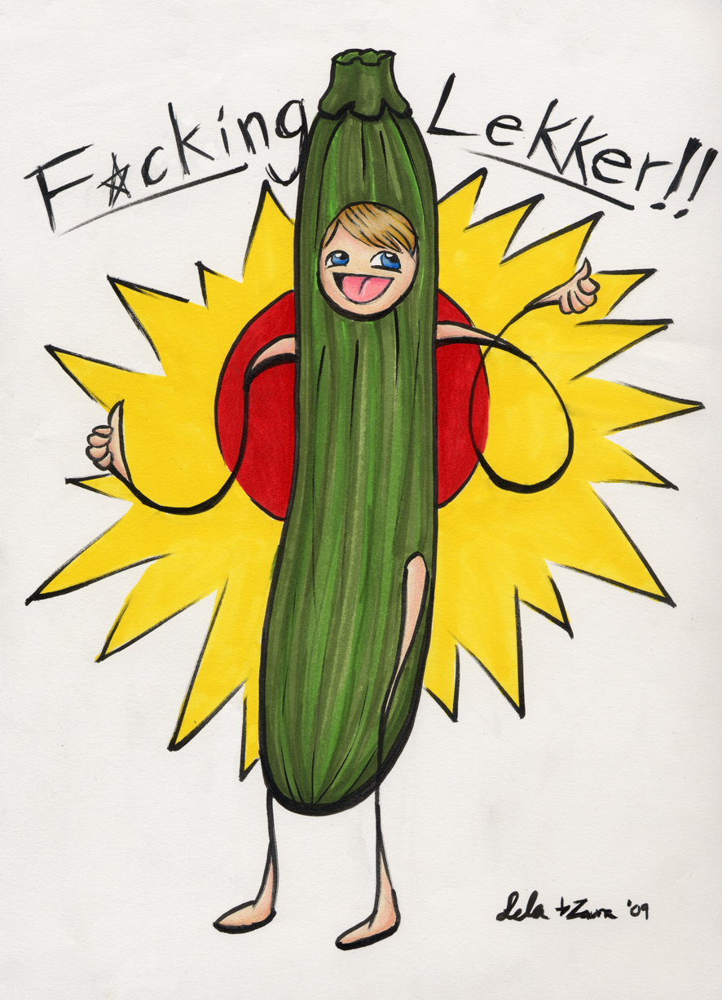
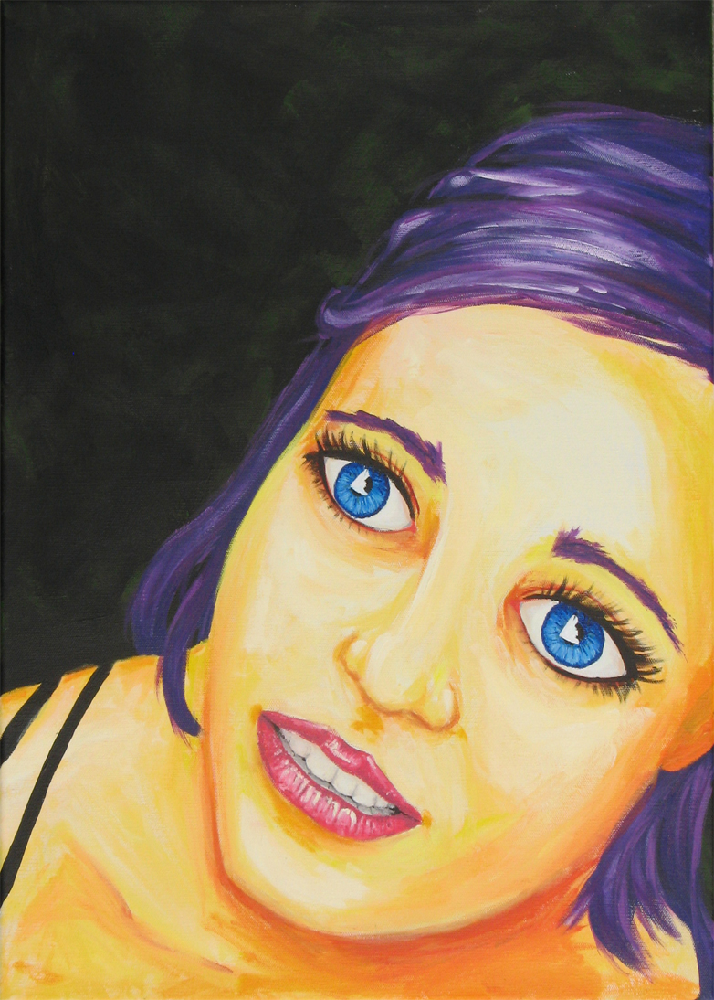
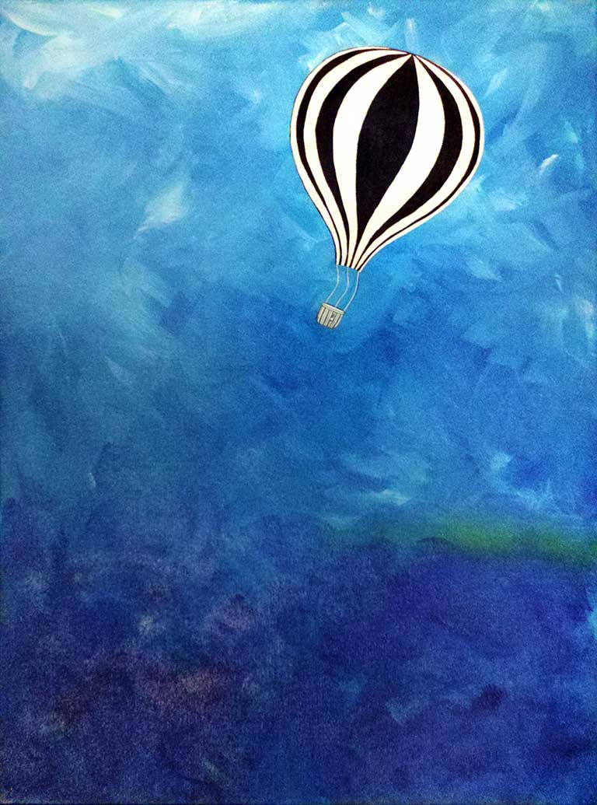

{Silliness: Ink, Alcohol-based Marker, Photoshop;}
Every visually creative person loves to doodle. These I find especially amusing.
The zucchini-man was done in collaboration with a friend. The paintings were done as part of "Horror Movies and Painting" night with other friends in acrylic.
 